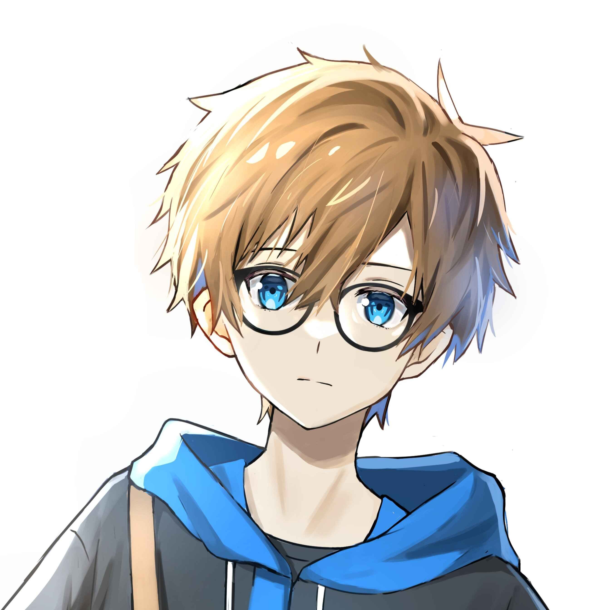

Hi, Naoyota's here!
I'm 2D illustrator and Designer
I'm an illustrator who consistently draws original characters and creates new character designs, from my chaotic mind full of crazy ideas that I need to get out. Besides my OCs, I also sometimes draw fanart from anime or games that I like. I live in indonesia
Besides that, I also sometimes make designs, like logos and graphic designs.
When my outside with digital art, i enjoy observing nature around my, school, playing game, watching movie/Anime, litsening to music, and much more.